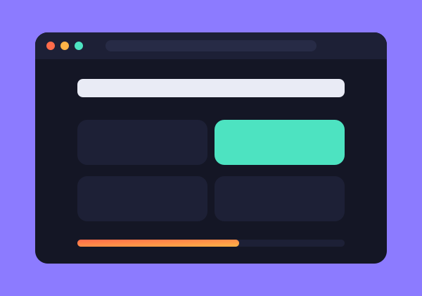
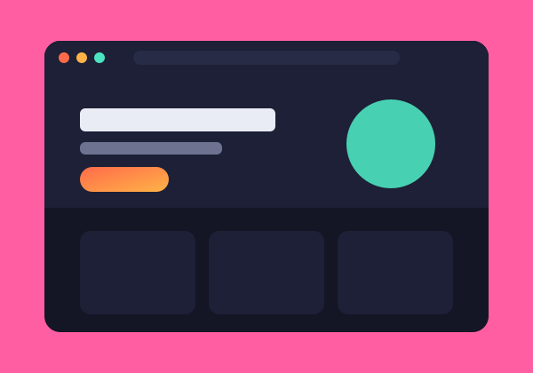
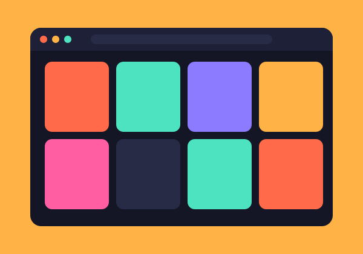

Weather Now
Weather dashboard with a five-day forecast and city search.
Weather dashboard with a five-day forecast and city search.

Tick what is in your fridge and get recipe ideas.
A calm to-do list with reordering, due dates and dark mode.

Multiple-choice revision quiz with a score bar.

Responsive landing page for a neighbourhood café.

A grid of colour palettes with copy-to-clipboard hex codes.